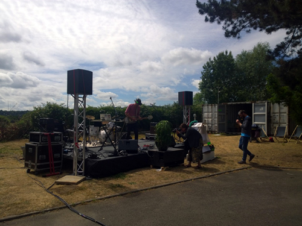
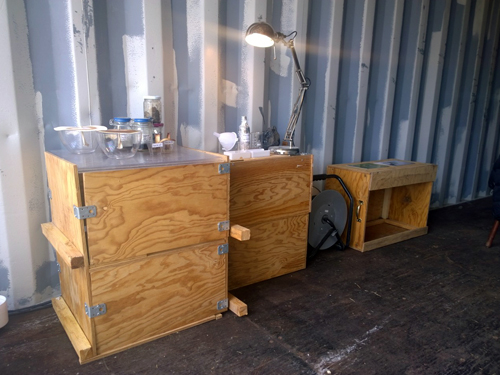
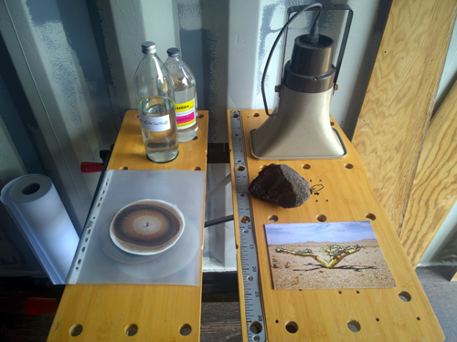
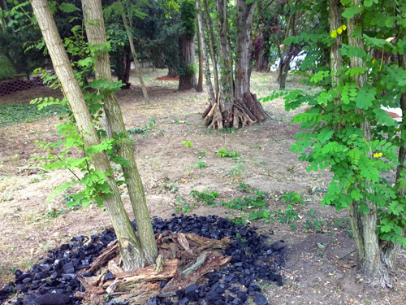

Présentation des recherches menées par le collectif, avec performance de Fred Maury pendant le concert live de Nicolibri de Garenne accompagné de sa skate guitare, et du flux de sève live ascendant dans un Beaucarnea recurvata.
Le mat météo installé sur le site, relève les données de température, humidité, pression, luminosité, pluviométrie, vitesse et direction du vent, humidité du sol. Il est installé en préfiguration de la réalisation du Concerto pour montée
de sève, projet réalisé in situ et sonorisant la vitesse de montée de sève des arbres d'une forêt.
Concert, Nicolobri de Garenne à la skate-guitare et flux de sève d'un Beaucarnea recurvata, Château Ephème, fête de la musique, 21 juin 2015.

Chromatographie, Delphine Chevrot, 2015.

Détail sur la gauche, Chromatographie, Delphine Chevrot, 2015.

Expérimentation,Terra Nova, Delphine Chevrot, 2015.